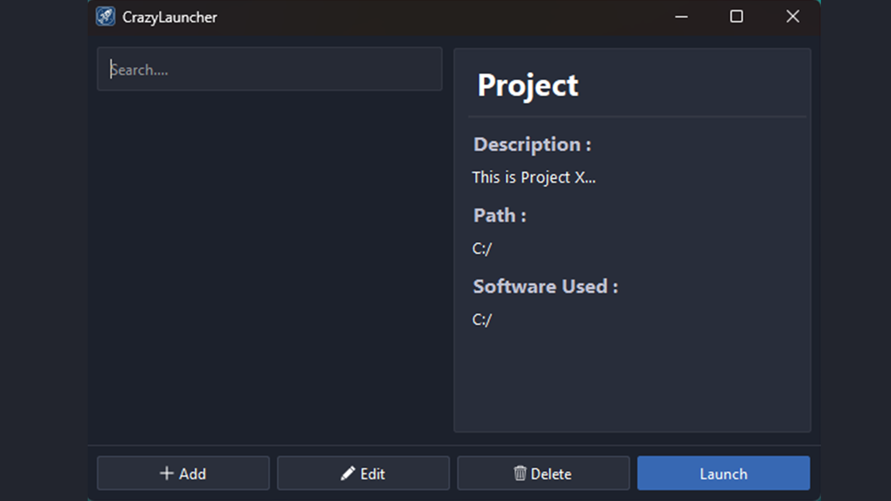
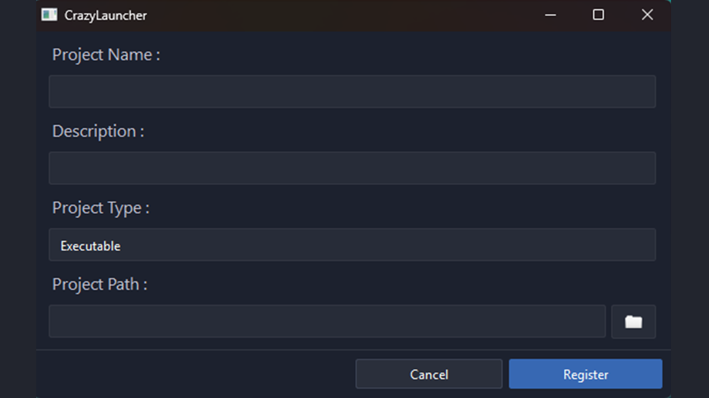
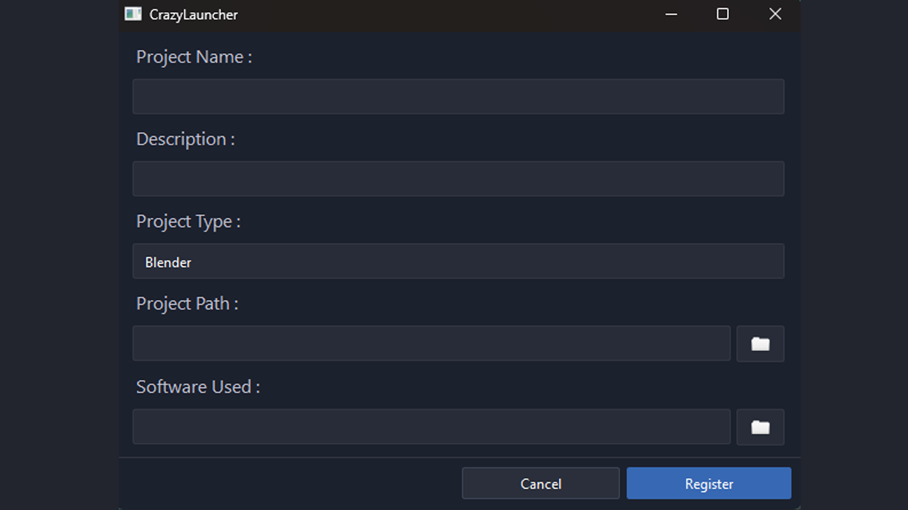

Features du Launcher
J'ai développé la gestion complète des projets: ajout, édition, suppression et recherche avec support de 7 types : exécutables, scripts, Unreal, Unity, Blender, Photoshop et un type personnalisable. J'ai également soigné l'interface via QSS et créé un installeur Windows pour le déploiement.